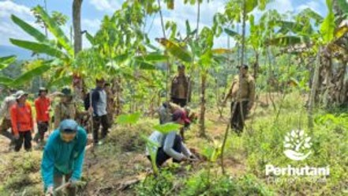

TASIKMALAYA, PERHUTANI (07/01/2026) | Perum Perhutani Kesatuan Pemangkuan Hutan (KPH) Tasikmalaya terus memperkuat pengelolaan hutan produksi melalui pengembangan Kebun Pangkas Pinus Bocor Getah di wilayah kerja Resort Pemangkuan Hutan (RPH) Sukaraja, Bagian Kesatuan Pemangkuan Hutan (BKPH) Singaparna. Kegiatan tersebut dilaksanakan pada hari Selasa (06/01) berlokasi di petak 1C dengan luas areal 0,37 hektare.
Pengembangan kebun pangkas ini tidak hanya bertujuan untuk meningkatkan kualitas tanaman serta mengoptimalkan produksi getah pinus, tetapi juga sebagai upaya mengembangkan bibit unggul guna mensukseskan keberlanjutan tanaman dan produksi getah pinus di masa depan.
Dalam pelaksanaannya, Perhutani melibatkan Lembaga Masyarakat Desa Hutan (LMDH) Taruna Jaya, Desa Tarunajaya, Kecamatan Sukaraja, Kabupaten Tasikmalaya sebagai mitra kerja di lapangan. Sinergi ini menjadi wujud kolaborasi strategis antara Perhutani dan masyarakat desa hutan dalam pengelolaan sumber daya hutan secara berkelanjutan.
Hadir dalam kegiatan tersebut Wakil Administratur/KSKPH Tasikmalaya Rodiana Rahman, Kepala Sub Seksi (KSS) Pembinaan Hutan Heny S, Kepala Sub Seksi Hukum, Kepatuhan, Agraria dan Komunikasi Perusahaan (HKAKP) Salim, Kepala Urusan Pelaporan, jajaran Resort Pemangkuan Hutan Sukaraja, anggota Polisi Kehutanan Mobile, serta perwakilan Lembaga Masyarakat Desa Hutan Taruna Jaya.
Wakil Administratur/KSKPH Tasikmalaya Rodiana Rahman menyampaikan bahwa pengembangan kebun pangkas ini merupakan langkah strategis dalam mendukung peningkatan produktivitas getah pinus secara berkelanjutan. “Kebun pangkas Pinus Bocor Getah ini diharapkan mampu meningkatkan kualitas tanaman sekaligus menjadi sumber bibit unggul yang mendukung keberhasilan produksi getah pinus di masa mendatang,” ungkapnya.
Sementara itu, Ketua Lembaga Masyarakat Desa Hutan (LMDH) Taruna Jaya, Aep Saepul, menyatakan komitmennya untuk mendukung penuh program Perhutani. “Kami siap bersinergi dan berperan aktif dalam pengelolaan kebun pangkas ini agar memberikan manfaat nyata bagi masyarakat desa hutan dengan tetap menjaga kelestarian hutan,” ujarnya.
Melalui pengembangan Kebun Pangkas Pinus Bocor Getah di RPH Sukaraja BKPH Singaparna, Perhutani berharap produktivitas getah pinus dapat meningkat secara optimal sekaligus memastikan keberlanjutan usaha kehutanan yang memberikan manfaat ekonomi, sosial, dan ekologis secara berimbang.
Editor: WK
Copyright © 2026 Warta Nusantara Barat